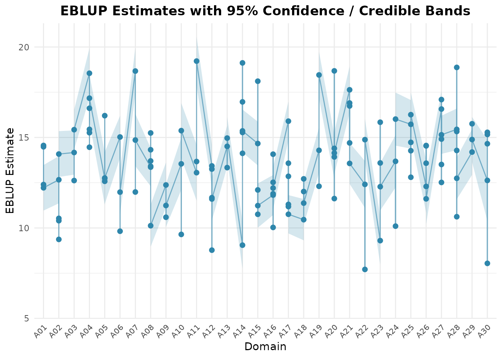

Estimasi Tingkat Subarea dengan Model Dua Tingkat
Source:vignettes/articles/id/twofold-subarea.Rmd
twofold-subarea.RmdGambaran Umum
Survei sering kali dirancang untuk wilayah besar (provinsi, region), padahal estimasinya dibutuhkan untuk subarea di dalamnya (kabupaten/kota, kecamatan). Subarea dalam satu area memiliki karakteristik area yang sama, sehingga estimasinya sebaiknya meminjam kekuatan bukan hanya dari regresi pada variabel penyerta, tetapi juga dari subarea lain di area yang sama.
Model subarea dua tingkat (two-fold) dari Torabi dan Rao (2014) melakukan hal ini dengan dua efek acak yang tersarang. fastsae mengestimasinya dengan dua cara:
| Fungsi | Pendekatan | Ketidakpastian | Agregat area |
|---|---|---|---|
eblup_twofold() |
EBLUP, REML atau ML | MSE analitik (tipe Prasad-Rao) atau MSE bootstrap parametrik |
df_area, dibobot dengan
weight
|
hb_twofold() |
Bayesian hierarkis dengan INLA | Simpangan baku posterior dan selang kredibel |
df_area, dibobot dengan
weight
|
hb_twofold() juga dapat mengestimasi respons binomial
dan Poisson serta efek area spasial (BYM2, Besag).
Model
Untuk subarea () dari area (), estimator langsung dengan varians sampling yang diketahui mengikuti
dengan sebagai efek area, sebagai efek subarea, dan sebagai galat sampling, ketiganya saling bebas.
Berbeda dengan model Fay-Herriot, yang memperlakukan setiap subarea seolah tidak berkaitan satu sama lain, efek area di sini diestimasi dari semua subarea tersampel di area . Hal ini paling berarti bagi subarea yang tidak tersampel: subarea tersebut memperoleh , bukan hanya estimasi sintetis . Hanya subarea di area yang sama sekali tidak memiliki sampel yang diprediksi secara sintetis.
Keluarannya mengikuti notasi di atas: random_effect_var
memuat sigma2_v (area) dan sigma2_u (subarea),
sedangkan df_eblup (atau df_hb) memuat
random_effect_area dan
random_effect_subarea.
Contoh dengan data simulasi
Data disimulasikan untuk 30 area yang masing-masing memiliki 3 sampai
6 subarea, sehingga rata-rata subarea yang sebenarnya,
,
diketahui. Lima belas subarea tidak memiliki sampel (estimasi
langsungnya NA), dan semua subarea di area A30
tidak tersampel.
library(fastsae)
set.seed(2024)
m <- 30
dat <- do.call(rbind, lapply(seq_len(m), function(i) {
ni <- sample(3:6, 1)
data.frame(
area = sprintf("A%02d", i),
subarea = sprintf("A%02d-%d", i, seq_len(ni)),
x1 = rnorm(ni, mean = 2),
pop = sample(200:2000, ni)
)
}))
v <- rnorm(m, sd = 1)
names(v) <- unique(dat$area)
dat$theta <- 10 + 2 * dat$x1 + v[dat$area] + rnorm(nrow(dat), sd = sqrt(0.5))
dat$vardir <- runif(nrow(dat), 0.5, 2)
dat$y <- dat$theta + rnorm(nrow(dat), sd = sqrt(dat$vardir))
# Subarea tak tersampel: 15 dipilih acak, ditambah semua subarea di A30
unsampled <- union(sample(which(dat$area != "A30"), 15), which(dat$area == "A30"))
dat$y[unsampled] <- NA
c(subareas = nrow(dat), sampled = sum(!is.na(dat$y)))
#> subareas sampled
#> 131 111
head(dat)
#> area subarea x1 pop theta vardir y
#> 1 A01 A01-1 1.5347257 1857 13.78128 1.663801 12.20118
#> 2 A01 A01-2 2.5191534 1961 15.03099 1.105026 14.48113
#> 3 A01 A01-3 2.5284898 1222 14.79953 1.301555 15.01471
#> 4 A01 A01-4 1.4848072 1252 11.84648 1.406429 11.36094
#> 5 A02 A02-1 1.8729653 1255 13.61192 1.986447 12.02304
#> 6 A02 A02-2 0.7751246 924 12.23727 1.268523 NASetiap baris mewakili satu subarea. Subarea yang tidak tersampel
tetap ada di data dengan y = NA beserta kovariatnya, agar
dapat diprediksi.
Mengestimasi EBLUP
fit_tf <- eblup_twofold(
y ~ x1,
vardir = "vardir",
domain = "area",
subarea = "subarea",
data = dat,
weight = "pop",
print_result = FALSE
)
fit_tf$random_effect_var
#> sigma2_v sigma2_u
#> 1.1067031 0.1486881
fit_tf$estcoef
#> beta std.error stderr_beta zvalue pvalue
#> (Intercept) 9.605159 0.3223129 0.3223129 29.80073 3.822665e-195
#> x1 2.104314 0.1144109 0.1144109 18.39260 1.505751e-75
head(fit_tf$df_eblup)
#> domain subarea y eblup vardir random_effect_area
#> 1 A01 A01-1 12.20118 12.39678 1.663801 -0.4204473
#> 2 A01 A01-2 14.48113 14.48525 1.105026 -0.4204473
#> 3 A01 A01-3 15.01471 14.55766 1.301555 -0.4204473
#> 4 A01 A01-4 11.36094 12.21855 1.406429 -0.4204473
#> 5 A02 A02-1 12.02304 12.66335 1.986447 -0.8351927
#> 6 A02 A02-2 NA 10.40107 1.268523 -0.8351927
#> random_effect_subarea mse rse
#> 1 -0.0174796591 0.4205889 5.231427
#> 2 -0.0005543296 0.3941804 4.334326
#> 3 0.0522123369 0.4063272 4.378712
#> 4 -0.0906664052 0.4122688 5.254976
#> 5 -0.0479275040 0.4428309 5.254973
#> 6 0.0000000000 0.4782345 6.648787Bawaan mse_type = "analytical" memberikan MSE tipe
Prasad-Rao untuk estimasi REML (untuk ML, koreksi biasnya ditambahkan).
Subarea A01-3 tidak tersampel: subarea ini tetap memperoleh
efek area A01, sedangkan efek subareanya bernilai 0.
weight (di sini jumlah penduduk setiap subarea)
mengagregasikan EBLUP subarea menjadi rata-rata area,
,
di df_area. MSE-nya memperhitungkan galat yang sama-sama
dimiliki subarea dalam satu area (efek area yang diestimasi dan
),
sehingga nilainya lebih besar daripada yang tersirat dari
.
head(fit_tf$df_area)
#> domain eblup_area mse_area rse_area n_subareas n_sampled
#> 1 A01 13.43189 0.2748473 3.903090 4 4
#> 2 A02 11.19056 0.3146821 5.012844 5 4
#> 3 A03 14.07817 0.2208185 3.337885 3 3
#> 4 A04 16.64890 0.3174408 3.384120 6 4
#> 5 A05 13.25981 0.4443843 5.027383 4 3
#> 6 A06 12.79993 0.2838182 4.162101 3 3Seberapa besar manfaat efek area?
Karena datanya hasil simulasi, setiap estimator dapat dibandingkan
dengan
yang sebenarnya. Model Fay-Herriot, yang diestimasi dengan
eblup_fh() pada baris-baris yang sama, mengabaikan
keberadaan area.
fit_fh <- eblup_fh(y ~ x1, vardir = "vardir", data = dat, print_result = FALSE)
sampled <- !is.na(dat$y)
in_sampled_area <- !sampled & dat$area != "A30"
emp_mse <- function(est, rows) mean((est[rows] - dat$theta[rows])^2)
data.frame(
rows = c("subarea tersampel", "subarea tak tersampel di area tersampel"),
direct = c(emp_mse(dat$y, sampled), NA),
fay_herriot = c(
emp_mse(fit_fh$df_eblup$eblup, sampled),
emp_mse(fit_fh$df_eblup$eblup, in_sampled_area)
),
two_fold = c(
emp_mse(fit_tf$df_eblup$eblup, sampled),
emp_mse(fit_tf$df_eblup$eblup, in_sampled_area)
)
)
#> rows direct fay_herriot two_fold
#> 1 subarea tersampel 1.211463 0.5087563 0.5291281
#> 2 subarea tak tersampel di area tersampel NA 1.5247133 0.7748664Kedua model memperbaiki estimasi langsung pada subarea yang tersampel, dan pada data ini akurasi keduanya di subarea tersebut kurang lebih sama: subarea tersampel sudah memiliki estimasi langsungnya sendiri, sehingga efek area hanya menambah sedikit. Perbedaannya terlihat pada subarea tak tersampel di area yang tersampel. Model Fay-Herriot hanya dapat memberinya estimasi sintetis, sedangkan model dua tingkat menambahkan efek area hasil estimasi dan memangkas galatnya kira-kira separuh. Ini hanya satu himpunan data simulasi, bukan studi simulasi: besarnya manfaat bergantung pada seberapa besar dibandingkan dengan .
MSE Bootstrap
Bootstrap parametrik mengestimasi ulang model pada B
himpunan data yang dibangkitkan dari model hasil estimasi, lalu
memprediksi dengan estimator yang sama seperti estimasi titiknya.
seed membuat hasilnya dapat direproduksi tanpa mengubah
aliran bilangan acak sesi R.
fit_boot <- eblup_twofold(
y ~ x1,
vardir = "vardir",
domain = "area",
subarea = "subarea",
data = dat,
mse_type = "bootstrap",
B = 100,
seed = 1,
print_result = FALSE
)
summary(fit_boot$df_eblup$mse / fit_tf$df_eblup$mse)
#> Min. 1st Qu. Median Mean 3rd Qu. Max.
#> 0.6322 0.8257 0.9056 0.9205 0.9971 1.4684Rata-rata kedua estimator MSE ini sejalan; dengan
B = 100, nilai bootstrap untuk tiap subarea masih belum
stabil. Gunakan mse_type = "none" bila yang dibutuhkan
hanya estimasi titiknya.
Diagnostik dan grafik
Perangkat yang biasa dipakai di paket ini juga berlaku untuk hasil estimasi tersebut:
autoplot(fit_tf, type = "comparison")
diagnose(fit_tf)
#> ── fastsae Small Area Estimation Diagnostic Report ─────────────────────────────
#> Model: "TWOFOLD" | Domains: 131 (Sampled: 111, Unsampled: 20)
#>
#> ── 1. Precision & Efficiency Gain ──
#>
#> ✔ Domains with RSE < 25%: 100% (High precision)
#> ✔ Average RSE reduction: Direct "8.54%" -> SAE "4.97%" (Gain: 3.57%)
#> ✔ Variance reduction in 100% of areas (MSE ratio median: 3.2, max: 5.34)
#>
#> ── 2. Brown et al. (2001) Diagnostics ──
#>
#> ✔ Goodness-of-Fit Statistic W: W = 60.62 (df = 111), p-value = 1 [Consistent with direct estimates]
#> ℹ Bias regression (direct ~ model, descriptive): alpha = -0.7789 (SE 0.5383), beta = 1.0544 (SE 0.0388), R^2 = 0.872
#> A slope above 1 is expected for shrinkage estimators; see ?diagnose.
#> ────────────────────────────────────────────────────────────────────────────────
#> ✔ Final Assessment: PASS: Model estimates are consistent with the direct estimates (Brown W test) and reliable.
#> ────────────────────────────────────────────────────────────────────────────────Bayesian Hierarkis dengan hb_twofold()
hb_twofold() mengestimasi model yang sama dengan INLA.
Fungsi ini memerlukan paket INLA, yang tidak tersedia
di CRAN; lihat https://www.r-inla.org/download/. Potongan kode di bawah
hanya dijalankan bila INLA terpasang.
Argumen weight (di sini jumlah penduduk setiap subarea)
mengagregasikan posterior subarea menjadi estimasi area,
,
beserta ketidakpastian posteriornya di df_area. Untuk model
Gaussian, agregat ini merupakan kombinasi linear dari prediktor subarea,
yang posteriornya dihitung INLA secara eksak; agregat binomial dan
Poisson diperoleh dari tarikan posterior
(inla_engine(draws = )).
fit_hb <- hb_twofold(
y ~ x1,
vardir = "vardir",
domain = "area",
subarea = "subarea",
weight = "pop",
data = dat,
print_result = FALSE
)
fit_hb$random_effect_var
#> sigma2_v sigma2_u
#> 1.2368827 0.1869415
head(fit_hb$df_hb)
#> domain subarea y hb linear_pred vardir sd mse
#> 1 A01 A01-1 12.20118 12.39291 12.39291 1.663801 0.6266775 0.3927247
#> 2 A01 A01-2 14.48113 14.48306 14.48306 1.105026 0.6021906 0.3626336
#> 3 A01 A01-3 15.01471 14.56058 14.56058 1.301555 0.6148579 0.3780502
#> 4 A01 A01-4 11.36094 12.20731 12.20731 1.406429 0.6221345 0.3870513
#> 5 A02 A02-1 12.02304 12.65289 12.65289 1.986447 0.6498255 0.4222732
#> 6 A02 A02-2 NA 10.39838 10.39838 1.268523 0.7104706 0.5047684
#> rse ci_lower ci_upper random_effect_area random_effect_subarea
#> 1 5.056743 11.151589 13.62601 -0.4211373 -2.072799e-02
#> 2 4.157896 13.296756 15.66941 -0.4211373 -1.332861e-03
#> 3 4.222757 13.363527 15.78868 -0.4211373 5.682072e-02
#> 4 5.096411 10.953962 13.40855 -0.4211373 -9.916925e-02
#> 5 5.135788 11.354131 13.91977 -0.8380926 -5.534552e-02
#> 6 6.832510 8.993673 11.81460 -0.8380926 -2.506173e-11
head(fit_hb$df_area)
#> domain hb_area sd_area mse_area rse_area ci_lower_area ci_upper_area
#> 1 A01 13.42840 0.5161905 0.2664526 3.844021 12.41294 14.43824
#> 2 A02 11.18137 0.5548771 0.3078886 4.962514 10.08439 12.26192
#> 3 A03 14.08161 0.4637541 0.2150678 3.293330 13.17468 14.99396
#> 4 A04 16.66042 0.5772648 0.3332347 3.464888 15.53877 17.80382
#> 5 A05 13.24774 0.6584824 0.4335991 4.970526 11.94814 14.53390
#> 6 A06 12.79909 0.5224744 0.2729795 4.082122 11.77398 13.82416
#> n_subareas
#> 1 4
#> 2 5
#> 3 3
#> 4 6
#> 5 4
#> 6 3Dengan prior bawaan, rata-rata posteriornya sangat dekat dengan EBLUP (rata-rata selisih, batas kesesuaian, dan korelasi konkordansi Lin di bawah):
compare_sae(fit_tf, fit_hb, names = c("EBLUP dua tingkat", "HB dua tingkat"))
#>
#> ── Small Area Estimation Model Concordance & Comparison ────────────────────────
#> Model 1: EBLUP dua tingkat
#> Model 2: HB dua tingkat
#> Matched Domains: 131
#> ────────────────────────────────────────────────────────────────────────────────
#>
#> Agreement, Ranking & Efficiency Metrics:
#> Group Metric
#> Domains Matched Domains
#> Agreement Mean Difference (HB dua tingkat - EBLUP dua tingkat)
#> Agreement 95% Limits of Agreement
#> Agreement Mean Absolute Difference (MAE)
#> Agreement Root Mean Squared Difference (RMSD)
#> Agreement Lin's Concordance Correlation (CCC)
#> Uncertainty Median |Difference| / RMSE of EBLUP dua tingkat
#> Uncertainty % of domains with |Difference| > RMSE of EBLUP dua tingkat
#> Ranking Spearman Rank Correlation (rho)
#> Ranking Mean Absolute Rank Change
#> Ranking Shared Top 13 (highest estimates)
#> Ranking Shared Bottom 13 (lowest estimates)
#> Efficiency Mean MSE Ratio (EBLUP dua tingkat / HB dua tingkat)
#> Efficiency Median MSE Ratio (EBLUP dua tingkat / HB dua tingkat)
#> Efficiency % of domains where HB dua tingkat reports lower uncertainty
#> Efficiency Mean RSE % (EBLUP dua tingkat)
#> Efficiency Mean RSE % (HB dua tingkat)
#> Value
#> 131
#> -0.0004
#> [-0.0208, 0.0200]
#> 0.0076
#> 0.0104
#> 1.0000
#> 0.008
#> 0.0%
#> 0.9999
#> 0.18
#> 13 / 13
#> 13 / 13
#> 1.0441
#> 1.0528
#> 78.6%
#> 4.97%
#> 4.89%
#> ℹ One model is Hierarchical Bayes: its posterior variance and the frequentist MSE of the other are not the same quantity, so a smaller value does not show a more accurate estimator.compare_sae() melaporkan varians posterior yang lebih
kecil daripada MSE EBLUP. Keduanya bukan besaran yang sama, dan di sini
rata-rata posterior
juga lebih kecil daripada estimasi REML-nya (keduanya di bawah nilai
sebenarnya, 0,5, yang memang sulit dipisahkan dari varians sampling yang
berkisar 0,5 sampai 2). Jadi, ketidakpastian yang dilaporkan lebih kecil
bukanlah bukti bahwa estimatornya lebih akurat. Dengan data simulasi,
galat terhadap nilai sebenarnya yang menentukan; di sini keduanya
praktis sama:
c(
eblup_two_fold = emp_mse(fit_tf$df_eblup$eblup, sampled | in_sampled_area),
hb_two_fold = emp_mse(fit_hb$df_hb$hb, sampled | in_sampled_area)
)
#> eblup_two_fold hb_two_fold
#> 0.5583827 0.5571181Untuk data cacahan atau proporsi, gunakan
family = "poisson" dengan exposure atau
family = "binomial" dengan trials. Dengan
spatial = "bym2" dan graf ketetanggaan W
antararea (misalnya dari create_weights()), efek area
menjadi berkorelasi secara spasial.
MCMC dengan engine = jax_engine()
Model yang sama dapat diestimasi dengan MCMC (No-U-Turn
sampler dari NumPyro di atas JAX) sebagai pengganti INLA. Cara ini
memerlukan Python dengan jax dan numpyro
(lihat ?setup_numpyro_env), sehingga potongan kode ini
tidak dijalankan di sini. Strukturnya sama, ditambah tarikan posterior
di draws dan split R-hat terbesar di
rhat_max; agregat area di df_area dihitung
dari tarikan MCMC.
fit_jax <- hb_twofold(
y ~ x1,
vardir = "vardir",
domain = "area",
subarea = "subarea",
weight = "pop",
data = dat,
engine = jax_engine(warmup = 1000, samples = 1000, chains = 4),
print_result = FALSE
)
fit_jax$rhat_max
head(fit_jax$df_area)Secara bawaan, kedua engine memakai prior yang sama
(jax_engine(priors = "inla")), sehingga estimasinya hanya
berbeda karena aproksimasi INLA dan galat Monte Carlo.
Proporsi dari survei kompleks
Proporsi yang diestimasi dari sampel berklaster dan berbobot kurang presisi dibandingkan proporsi dari sampel acak sederhana berukuran yang sama. Model binomial/logit-normal dengan ukuran sampel efektif (Chen, Wakefield, dan Lumley, 2014; Franco dan Bell, 2015) memperhitungkan hal ini: dengan efek desain , ukuran sampel efektifnya adalah dan banyaknya kasus efektif , serta
sehingga varians binomial
sama dengan varians desain dari
.
Baik
maupun
tidak harus bilangan bulat. hb_twofold() (dan
hb_area()) menerima proporsi sebagai respons dan ukuran
sampel efektif sebagai trials, tanpa membulatkannya: INLA
lalu memakai likelihood "xbinomial", yang sama dengan
likelihood binomial bila nilainya bulat. Estimasi langsung bernilai 0
adalah nol sampling (sampling zero) dan dimasukkan ke model apa
adanya.
set.seed(7)
prov <- rep(1:12, times = sample(4:8, 12, replace = TRUE))
svy <- data.frame(
prov = prov,
kab = seq_along(prov),
x1 = rnorm(length(prov)),
pop = round(runif(length(prov), 2e4, 2e5))
)
p_true <- plogis(-2.5 + 0.5 * svy$x1 + rnorm(12, sd = 0.4)[prov] +
rnorm(nrow(svy), sd = 0.3))
n <- sample(30:200, nrow(svy), replace = TRUE)
svy$deff <- runif(nrow(svy), 1.3, 2.5) # dari survei, misalnya estimasi varians berbasis desain
svy$n_eff <- n / svy$deff
# sampel berklaster: estimasi langsung bervariasi seperti proporsi binomial dengan ukuran n_eff
svy$p_hat <- rbinom(nrow(svy), round(svy$n_eff), p_true) / round(svy$n_eff)
sum(svy$p_hat == 0) # kabupaten dengan estimasi langsung bernilai 0
#> [1] 7
fit_neff <- hb_twofold(
p_hat ~ x1,
domain = "prov",
subarea = "kab",
weight = "pop",
data = svy,
family = "binomial",
trials = "n_eff",
print_result = FALSE
)
#> ℹ Response `y` appears to be proportions; using `y * trials` as the number of cases (not rounded).
head(fit_neff$df_hb[, c("domain", "subarea", "y", "hb", "sd", "ci_lower", "ci_upper")])
#> domain subarea y hb sd ci_lower ci_upper
#> 1 1 1 0.41836735 0.37409427 0.04307253 0.29454015 0.4627761
#> 2 1 2 0.05128205 0.13067929 0.03276678 0.07144346 0.1984515
#> 3 1 3 0.29310345 0.28807516 0.03512986 0.22249333 0.3603271
#> 4 1 4 0.18181818 0.16933153 0.03333370 0.11034873 0.2415770
#> 5 1 5 0.07692308 0.08946073 0.02336390 0.05011427 0.1413170
#> 6 2 6 0.11009174 0.11499305 0.02219475 0.07582924 0.1629786
head(fit_neff$df_area)
#> domain hb_area sd_area mse_area rse_area ci_lower_area
#> 1 1 0.21368578 0.02102948 0.0004422392 9.841311 0.17544732
#> 2 2 0.17879562 0.01825198 0.0003331349 10.208294 0.14510668
#> 3 3 0.09158910 0.01079893 0.0001166168 11.790624 0.07157919
#> 4 4 0.05061355 0.01078488 0.0001163136 21.308282 0.03198408
#> 5 5 0.12943220 0.01795293 0.0003223078 13.870530 0.09692061
#> 6 6 0.10547237 0.02022190 0.0004089252 19.172698 0.07000893
#> ci_upper_area n_subareas
#> 1 0.25581533 5
#> 2 0.21663491 6
#> 3 0.11395540 7
#> 4 0.07390549 5
#> 5 0.16706166 5
#> 6 0.15003080 6
# kabupaten dengan estimasi langsung bernilai 0
fit_neff$df_hb[svy$p_hat == 0, c("subarea", "hb", "ci_lower", "ci_upper")]
#> subarea hb ci_lower ci_upper
#> 24 24 0.08050369 0.03983424 0.13449858
#> 32 32 0.05450033 0.02616774 0.09442622
#> 37 37 0.07686705 0.03966583 0.12537154
#> 61 61 0.04219260 0.02001900 0.07550066
#> 62 62 0.03536596 0.01692742 0.06207811
#> 63 63 0.02568168 0.01187225 0.04668562
#> 65 65 0.03351623 0.01613114 0.05817592Kualitas model ini sepenuhnya bergantung pada efek desainnya. Efek
desain tidak diestimasi oleh model, sehingga ukuran sampel efektif yang
terlalu besar menghasilkan selang yang terlalu sempit. Efek desain untuk
area kecil pun tidak stabil, dan sering kali perlu dihaluskan dulu
sebelum dipakai (misalnya digabungkan dalam wilayah yang lebih besar
atau dimodelkan). Prior bawaannya sama dengan prior untuk keluarga lain
(artikel prior bawaan); prior
untuk koefisien, misalnya, ditetapkan dengan
inla_engine(control.fixed = list(mean = 0, prec = 1)).
Catatan praktis
- Sediakan satu baris untuk setiap subarea. Kolom
domainmenandai area dan wajib ada. -
vardirharus terhingga dan positif untuk setiap subarea yang tersampel; subarea tak tersampel boleh bernilaiNA. Kovariat harus lengkap untuk semua baris, baik yang tersampel maupun tidak. - Paling sedikit dua area harus memiliki subarea yang tersampel; bila tidak, tidak dapat diestimasi.
-
eblup_twofold()menyediakanself_benchmark = TRUEuntuk estimasi yang jumlahnya harus sama dengan total yang diketahui (lihat?eblup_twofold).
Daftar Pustaka
- Torabi, M., & Rao, J. N. K. (2014). On small area estimation under a sub-area level model. Journal of Multivariate Analysis, 127, 36–55.
- Chen, C., Wakefield, J., & Lumley, T. (2014). The use of sampling weights in Bayesian hierarchical models for small area estimation. Spatial and Spatio-temporal Epidemiology, 11, 33–43.
- Franco, C., & Bell, W. R. (2015). Borrowing information over time in binomial/logit normal models for small area estimation. Statistics in Transition new series, 16(4), 563–584.
- Rao, J. N. K., & Molina, I. (2015). Small Area Estimation (2nd ed.). John Wiley & Sons.
- Rue, H., Martino, S., & Chopin, N. (2009). Approximate Bayesian inference for latent Gaussian models by using integrated nested Laplace approximations. Journal of the Royal Statistical Society: Series B, 71(2), 319–392.